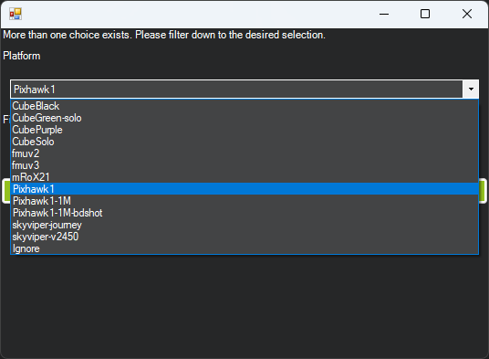

[copywiki destination=”copter,plane,rover,planner,blimp”]
Loading Firmware¶
These instructions will show you how to download the latest firmware onto the autopilot hardware that already has ArduPilot firmware installed. This process will use the Mission Planner ground control station. See Loading Firmware onto boards without existing ArduPilot firmware.
Connect autopilot to computer¶
Once you have installed a ground station on your computer, connect the autopilot using a USB cable as shown below. Use a direct USB port on your computer (not a USB hub).

Pixhawk USB Connection¶
Windows should automatically detect and install the correct driver software.
Select the COM port¶
If using Mission Planner as the GCS, select the COM port drop-down in the upper-right corner of the window near the Connect button. Select AUTO or the specific port for your board. Set the Baud rate to 115200 as shown. Do not hit Connect just yet.

Install firmware¶
In Mission Planner’s SETUP | Install Firmware screen select the appropriate icon that matches your vehicle or frame type(i.e. Quad, Hexa). Answer Yes when it asks you “Are you sure?”.

Mission Planner: Install FirmwareScreen¶
Mission Planner will try to detect which board you are using. It may ask you to unplug the board, press OK, and plug it back in to detect the board type.

Mission Planner: Install FirmwarePrompt¶
Often you will be presented with a dropdown box of firmware variants for the board, which you can select from (such as bi-directional DShot variants, if available). For boards which share the Pixhawk board id, the list will be extensive, as shown below:
{kind=link}
Select the appropriate firmware for your board. For boards marked “Pixhawk”, Pixhawk1 firmware is usually the best choice.
Warning
some boards labeled as Pixhawk 2.4.x may have sensor substitutions which may lead to pre-arm checks or no secondary IMU. Please see the BARO_OPTIONS parameter for a workaround for a known sensor substitution on some boards of a MS5607 barometer where a MS5611 should be used. IMUs may also be substituted. Where possible, please source autopilots from ArduPilot partners.
If all goes well, you will see a status appear on the bottom right including the words: “erase…”, “program…”, “verify..”, and “Upload Done”. The firmware has been successfully uploaded to the board.
It usually takes a few seconds for the bootloader to exit and enter the main code after programming or a power-up. Wait to press CONNECT until this occurs.
Note
Updating the firmware to a newer version does not alter existing parameters unless the firmware is for a different vehicle, in which case parameters are reset to their default values for that vehicle. However, it is always a good idea to save your parameters to a file using the “Save to File” button on the Mission Planner’s CONFIG/Full Parameter Tree tab before any firmware updates, just in case of any issues while updating. Do not apply all parameters after upgrading to a new version as some parameters might have a different meaning.
Using Beta and Developer Versions¶
Beta¶
Prior to Stable releases, Beta versions are released. These may be used if you wish to try newer features or help the developers flight test new code. Since these are “beta” versions, there may still be bugs. This is possible even in Stable release firmware. However, a Beta release has been tested by the development team, and already flight tested. This release allows a wider user base to final test the firmware before releasing as Stable. Experienced ArduPilot users are encouraged to test fly this firmware and provide feedback.
Mission Planner has an option on the Install Firmware page to upload this release, but later Stable releases may already be available. Be sure to check the normal vehicle upload option first.
Latest Developer Version¶
This reflects the current state of the development branch of the ArduPilot code. It has been reviewed by the development team, passed all automated test suites, and in most cases test flown. This code gets built daily and is available for testing by experienced users. This corresponds to an “alpha” release, and may have bugs, although very rarely “crash inducing”. Very shortly after an addition that changes or introduces a feature is added, the Upcoming Features section of the Wiki is updated with information about the addition or change.
This code must be manually downloaded from the Firmware Downloads page as latest for your particular board, and then uploaded using Mission Planner’s “Load Custom Firmware” option on its Install Firmware Page
Custom Firmware Build Server¶
ArduPilot is currently experimentally testing a custom firmware build server that will allow users to generate firmware builds for their autopilots with selectable features. Since all 1MB flash sized boards now have feature restrictions to allow the code to fit, this will give a path to enable a user to select which features will or will not be included, giving some flexibility to users of 1MB autopilots.
The server is located here
It allows creating a custom build, which can be downloaded, and flashed to the autopilot using Mission Planner’s “Load Custom Firmware” option on its Install Firmware Page
Firmware Limitations¶
For a list of what features are not included in the current “latest” firmware for any given autopilot, see this page.
All the feature options currently not included in the 1MB autopilots, by default, are on the list of options on the Custom Firmware Build Server. There are also many features still included in the 1MB autopilots that may not be required for your application. So it is possible to create a build that includes some of the currently excluded features while removing some of the unneeded features. The list of feature options will be continuously expanded, allowing other large features to be dropped and more restricted features added to the custom build. For example, not including QuadPlane features will save space for Planes not requiring it. Drivers and peripheral support may be individually selected, allowing only those used to be in the code thus allowing other features to be included in the custom firmware.
Current build is from the daily master branch only (“latest”). In the future, Stable and Beta branches will be selectable.
Testing¶
You can test the firmware is working on a basic level by switching to the Mission Planner Flight Data screen and pressing the Connect button. The HUD should update as you tilt the board.
连接Mission Planner和飞控 has more information on connecting to Mission Planner.